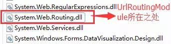
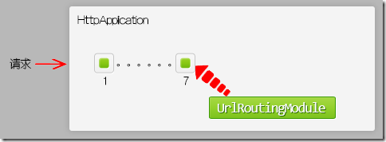
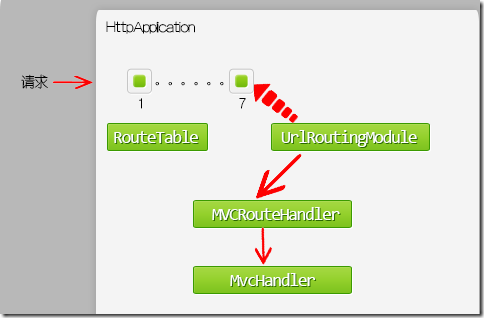
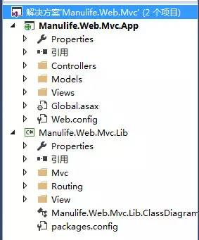
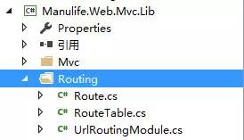
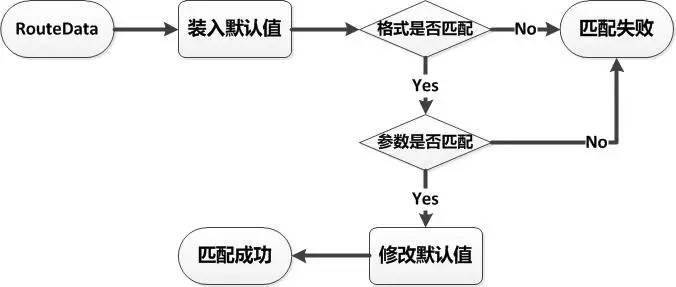
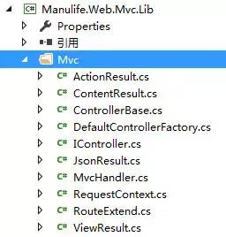
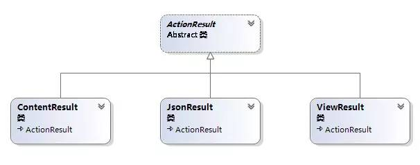
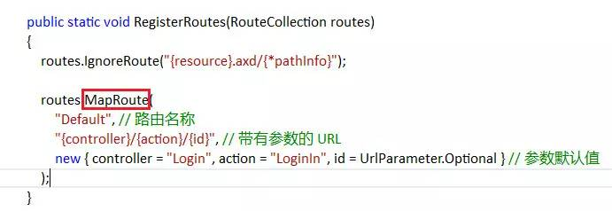

(点击上方公众号，可快速关注)
来源：周旭龙（@周旭龙EdisonChou）
网址：http://www.cnblogs.com/edisonchou/p/5256517.html
在ASP.NET MVC中，最核心的当属“路由系统”，而路由系统的核心则源于一个强大的System.Web.Routing.dll组件。

在这个System.Web.Routing.dll中，有一个最重要的类叫做UrlRoutingModule，它是一个实现了IHttpModule接口的类，在请求处理管道中专门针对ASP.NET MVC请求进行处理。首先，我们要了解一下UrlRoutingModule是如何起作用的。
（1）IIS网站的配置可以分为两个块：全局 Web.config 和本站 Web.config。Asp.Net Routing属于全局性的，所以它配置在全局Web.Config 中，我们可以在如下路径中找到：“$WindowsMicrosoft.NETFramework版本号ConfigWeb.config
<?xml version="1.0" encoding="utf-8"?>
<!-- the root web configuration file -->
<configuration>
<system.web>
<httpModules>
<add name="UrlRoutingModule-4.0" type="System.Web.Routing.UrlRoutingModule" />
</httpModules>
</system.web>
</configuration>
（2）通过在全局Web.Config中注册 System.Web.Routing.UrlRoutingModule，IIS请求处理管道接到请求后，就会加载 UrlRoutingModule类型的Init()方法。
PS : 在UrlRoutingModule中为请求处理管道中的第七个事件PostResolveRequestCache注册了一个事件处理方法：OnApplicationPostResolveRequestCache。从这里可以看出：ASP.NET MVC的入口在UrlRoutingModule，即订阅了HttpApplication的第7个管道事件PostResolveRequestCahce。换句话说，是在HtttpApplication的第7个管道事件处对请求进行了拦截。

现在我们将ASP.NET MVC的请求处理分为两个重要阶段来看看：
当请求到达UrlRoutingModule的时候，UrlRoutingModule取出请求中的Controller、Action等RouteData信息，与路由表中的所有规则进行匹配，若匹配，把请求交给IRouteHandler，即MVCRouteHandler。我们可以看下UrlRoutingModule的源码来看看，以下是几句核心的代码：
public virtual void PostResolveRequestCache(HttpContextBase context)
{
// 通过RouteCollection的静态方法GetRouteData获取到封装路由信息的RouteData实例
RouteData routeData = this.RouteCollection.GetRouteData(context);
if (routeData != null)
{
// 再从RouteData中获取MVCRouteHandler
IRouteHandler routeHandler = routeData.RouteHandler;
......
if (!(routeHandler is StopRoutingHandler))
{
......
// 调用 IRouteHandler.GetHttpHandler()，获取的IHttpHandler 类型实例，它是由 IRouteHandler.GetHttpHandler获取的，这个得去MVC的源码里看
IHttpHandler httpHandler = routeHandler.GetHttpHandler(requestContext);
......
// 合适条件下，把之前将获取的IHttpHandler 类型实例 映射到IIS HTTP处理管道中
context.RemapHandler(httpHandler);
}
}
}
从源码片段中可以看出，最后将请求转移给了实现了IHttpHandler接口的处理程序进行后续的处理。在ASP.NET MVC的实现中，是将请求交给了MvcHandler这个类，通过执行其ProcessRequest方法来进行后续的处理。

（1）在WebForm中，此阶段会调用Page类对象的ProcessRequest()方法。在ASP.NET MVC中，会调用MvcHandler的ProcessRequest()方法，此方法会激活具体请求的Controller类对象，触发Action方法，返回ActionResult实例。
（2）如果ActionResult是非ViewResult，比如JsonResult, ContentResult，这些内容将直接被输送到Response响应流中，显示给客户端；如果是ViewResult，就会进入下一个渲染视图环节。
（3）在渲染视图环节，ViewEngine找到需要被渲染的视图，View被加载成WebViewPage类型，并渲染生成Html，最终返回Html。

在该解决方案中，一共有两个项目：
一个是App，它是一个由最小化的引用环境（只引用了System和System.Web，以及Mvc.Lib）搭建起来的一个Web应用项目，借助MVC核心类库（Mvc.Lib）实现了MVC模式。
一个是Lib，它是一个模拟ASP.NET MVC框架的最小化、轻量级的迷你MVC框架，其中Mvc文件夹模拟System.Web.Mvc，Routing文件夹模拟System.Web.Routing，而View则简单地借助NVelocity模板引擎提供View视图服务。
（1）Routing

从第一部分我们可以知道，ASP.NET MVC的入口在于UrlRoutingModule，因此这里我们便模拟实现了一个UrlRoutingModule.
///
/// 解析请求中的路由数据，并分发请求到Handler
///
public class UrlRoutingModule : IHttpModule
{
public void Init(HttpApplication application)
{
// 注册ASP.NET请求处理管道的第七个事件
application.PostResolveRequestCache += Application_PostResolveRequestCache;
}
// 假设请求 http://www.edisonchou.cn/home/index
private void Application_PostResolveRequestCache(object sender, EventArgs e)
{
var application = sender as HttpApplication;
var context = application.Context;
// 根据全局路由表解析当前请求的路径
var requestUrl = context.Request.AppRelativeCurrentExecutionFilePath.Substring(2);
// 遍历全局路由表中的路由规则解析数据
IDictionarystring, object> routeData;
var route = RouteTable.MatchRoutes(requestUrl, out routeData);
if (route == null)
{
// 404 Not Found
throw new HttpException(404, "Not Found!");
}
// 获取处理请求的Handler处理程序
if (!routeData.ContainsKey("controller"))
{
// 404 Not Found
throw new HttpException(404, "Not Found!");
}
var handler = route.GetRouteHandler(routeData);
// 为当前请求指定Handler处理程序
context.RemapHandler(handler);
}
public void Dispose()
{
this.Dispose();
}
}
该UrlRoutingModule通过注册ASP.NET请求处理管道的第七个事件，来实现对URL地址进行路由规则的处理，并将最后生成的路由数据交给MvcHandler进行后续处理。这里我省略了ASP.NET MVC源码中MvcRouteHandler生成MvcHandler的步骤，直接丢给MvcHandler处理。
核心部分有两点，一是路由规则的匹配，二是为请求指定handler。
在路由规则的匹配中，通过设置路由数据键值对（Dictionary），并将设置好的路有数据传递给MvcHandler。具体的流程如下图所示，这里就不再展示源码，请自行下载DEMO查看：

（2）Mvc

在此文件夹中，实现了三个核心的部分：
① 最核心的处理者 ： MvcHandler
public class MvcHandler : IHttpHandler
{
private IDictionarystring, object> routeData;
public MvcHandler(IDictionarystring, object> routeData)
{
this.routeData = routeData;
}
public void ProcessRequest(HttpContext context)
{
var controllerName = routeData["controller"].ToString();
// 借助控制器工厂创建具体控制器实例
IController controller = DefaultControllerFactory.CreateController(controllerName);
// 确保有找到一个Controller处理请求
if (controller == null)
{
// 404 Not Found!
throw new HttpException(404, "Not Found");
}
// 封装请求
var requestContext = new RequestContext { HttpContext = context, RouteData = routeData };
// 开始执行
var result = controller.Execute(requestContext);
result.Execute(requestContext);
}
public bool IsReusable
{
get
{
return false;
}
}
}
② 花样的返回类型 ： ActionResult 以及它的子类们

在以往的ASP.NET MVC开发中，我们在Action方法的编写中，总会看到它们的返回类型都是以ActionResult为基类的各种Result类型。
/// <summary>
/// Action统一的返回类型
/// </summary>
public abstract class ActionResult
{
public abstract void Execute(RequestContext context);
}
因此，这里也实现了ActionResult这个抽象类，并以此为基础实现了ContentResult、JsonResult以及ViewResult。它们的区别就在于是不同的返回类型，因此有不同的处理。
这里以ContentResult 和 JsonResult 为例，来看看具体做了什么处理。
[ContentResult]
public class ContentResult : ActionResult
{
private string content;
private string contentType;
public ContentResult(string content, string contentType)
{
this.content = content;
this.contentType = contentType;
}
public override void Execute(RequestContext context)
{
context.HttpContext.Response.Write(content);
context.HttpContext.Response.ContentType = contentType;
}
}
[JsonResult]
public class JsonResult : ActionResult
{
private object paraObj;
public JsonResult(object paraObj)
{
this.paraObj = paraObj;
}
public override void Execute(RequestContext context)
{
JavaScriptSerializer jss = new JavaScriptSerializer();
var json = jss.Serialize(paraObj);
context.HttpContext.Response.Write(json);
context.HttpContext.Response.ContentType = "application/json";
}
}
相信有经验的读者一眼就看穿了，因此这里也就不再多说了。
③ 路由的扩展者 ： RouteExtend
在以往的ASP.NET MVC开发中，我们会在Global全局应用处理文件中为项目注册路由规则，但却不知道其实我们常用的MapRoute方法其实是一个扩展方法，它并不位于System.Web.Routing这个类库之中，而是位于System.Web.Mvc这个类库之中。

因此，我们也在Mvc文件夹中实现了一个RouteExtend类，它为RouteTable类的Route集合实现了一个扩展方法：
///
/// Route 的扩展方法所在类
///
public static class RouteExtend
{
///
/// 指定MvcHandler来处理
///
public static void MapRoute(this IList source, string urlTemplate, object defaults)
{
MapRoute(source, urlTemplate, defaults, routeData => new MvcHandler(routeData));
}
///
/// 通过指定实现了IHttpHandler的处理程序来处理
///
public static void MapRoute(this IList source, string urlTemplate, object defaults, Funcstring, object>, IHttpHandler> handler)
{
source.Add(new Route(urlTemplate, defaults, handler));
}
}
可以看出，MvcHandler是在这里传入的（Mvc与Routing是单向依赖）。那么，为什么还要提供一个可传入自定义Handler的接口呢？因为，不同的路由规则有可能需要不同的实现IHttpHandler的处理程序来处理，也不一定就非得是MvcHandler。
接下文
【今日微信公号推荐↓】
![]()